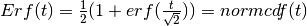

List of Functions and Default Parameters¶
List of Kernels and Default Parameters¶
- class pyGPs.Core.cov.Const(log_sigma=0.0)[source]¶
Constant kernel. hyp = [ log_sigma ]
Parameters: log_sigma – signal deviation.
- class pyGPs.Core.cov.FITCOfKernel(cov, inducingInput)[source]¶
Covariance function to be used together with the FITC approximation. The function allows for more than one output argument and does not respect the interface of a proper covariance function. Instead of outputing the full covariance, it returns cross-covariances between the inputs x, z and the inducing inputs xu as needed by infFITC
- class pyGPs.Core.cov.Gabor(log_ell=0.0, log_p=0.0)¶
Gabor covariance function with length scale ell and period p. The covariance function is parameterized as:
k(x,z) = h( ||x-z|| ) with h(t) = exp(-t^2/(2*ell^2))*cos(2*pi*t/p).
The hyperparameters are:
hyp = [log(ell), log(p)]
Note that SM covariance implements a weighted sum of Gabor covariance functions, but using an alternative (spectral) parameterization.
Parameters: - log_ell – characteristic length scale.
- log_p – period.
- class pyGPs.Core.cov.Kernel[source]¶
This is a base class of Kernel functions there is no computation in this class, it just defines rules about a kernel class should have each covariance function will inherit it and implement its own behaviour
- fitc(inducingInput)[source]¶
Covariance function to be used together with the FITC approximation. Setting FITC gp model will implicitly call this method.
Returns: an instance of FITCOfKernel
- getCovMatrix(x=None, z=None, mode=None)[source]¶
Return the specific covariance matrix according to input mode
Parameters: - x – training data
- z – test data
- mode (str) – ‘self_test’ return self covariance matrix of test data(test by 1). ‘train’ return training covariance matrix(train by train). ‘cross’ return cross covariance matrix between x and z(train by test)
Returns: the corresponding covariance matrix
- getDerMatrix(x=None, z=None, mode=None, der=None)[source]¶
Compute derivatives wrt. hyperparameters according to input mode
Parameters: - x – training data
- z – test data
- mode (str) – ‘self_test’ return self derivative matrix of test data(test by 1). ‘train’ return training derivative matrix(train by train). ‘cross’ return cross derivative matrix between x and z(train by test)
- der (int) – index of hyperparameter whose derivative to be computed
Returns: the corresponding derivative matrix
- class pyGPs.Core.cov.LINard(D=None, log_ell_list=None)[source]¶
Linear covariance function with Automatic Relevance Detemination. hyp = log_ell_list
Parameters: - D – dimension of training data. Set if you want default ell, which is 1 for each dimension.
- log_ell_list – characteristic length scale for each dimension.
- class pyGPs.Core.cov.Linear(log_sigma=0.0)[source]¶
Linear kernel. hyp = [ log_sigma ].
Parameters: log_sigma – signal deviation.
- class pyGPs.Core.cov.Matern(log_ell=0.0, d=3, log_sigma=0.0)[source]¶
Matern covariance function with nu = d/2 and isotropic distance measure. For d=1 the function is also known as the exponential covariance function or the Ornstein-Uhlenbeck covariance in 1d. d will be rounded to 1, 3, 5 or 7 hyp = [ log_ell, log_sigma]
Parameters: - d – d is 2 times nu. Can only be 1,3, 5, or 7
- log_ell – characteristic length scale.
- log_sigma – signal deviation.
- class pyGPs.Core.cov.Noise(log_sigma=0.0)[source]¶
Independent covariance function, i.e “white noise”, with specified variance. Normally NOT used anymore since noise is now added in liklihood. hyp = [ log_sigma ]
Parameters: log_sigma – signal deviation.
- class pyGPs.Core.cov.Periodic(log_ell=0.0, log_p=0.0, log_sigma=0.0)[source]¶
Stationary kernel for a smooth periodic function. hyp = [ log_ell, log_p, log_sigma]
Parameters: - log_p – period.
- log_ell – characteristic length scale.
- log_sigma – signal deviation.
- class pyGPs.Core.cov.PiecePoly(log_ell=0.0, v=2, log_sigma=0.0)[source]¶
Piecewise polynomial kernel with compact support. hyp = [log_ell, log_sigma]
Parameters: - log_ell – characteristic length scale.
- log_sigma – signal deviation.
- v – degree v will be rounded to 0,1,2,or 3. (not treated as hyperparameter, i.e. will not be trained).
- class pyGPs.Core.cov.Poly(log_c=0.0, d=2, log_sigma=0.0)[source]¶
Polynomial covariance function. hyp = [ log_c, log_sigma ]
Parameters: - log_c – inhomogeneous offset.
- log_sigma – signal deviation.
- d – degree of polynomial (not treated as hyperparameter, i.e. will not be trained).
- class pyGPs.Core.cov.Pre(M1, M2)[source]¶
Precomputed kernel matrix. No hyperparameters and thus nothing will be optimised.
Parameters: - M1 – cross covariances matrix(train+1 by test). last row is self covariances (diagonal of test by test)
- M2 – training set covariance matrix (train by train)
- class pyGPs.Core.cov.RBF(log_ell=0.0, log_sigma=0.0)[source]¶
Squared Exponential kernel with isotropic distance measure. hyp = [log_ell, log_sigma]
Parameters: - log_ell – characteristic length scale.
- log_sigma – signal deviation.
- class pyGPs.Core.cov.RBFard(D=None, log_ell_list=None, log_sigma=0.0)[source]¶
Squared Exponential kernel with Automatic Relevance Determination. hyp = log_ell_list + [log_sigma]
Parameters: - D – dimension of pattern. set if you want default ell, which is 1 for each dimension.
- log_ell_list – characteristic length scale for each dimension.
- log_sigma – signal deviation.
- class pyGPs.Core.cov.RBFunit(log_ell=0.0)[source]¶
Squared Exponential kernel with isotropic distance measure with unit magnitude. i.e signal variance is always 1. hyp = [ log_ell ]
Parameters: log_ell – characteristic length scale.
- class pyGPs.Core.cov.RQ(log_ell=0.0, log_sigma=0.0, log_alpha=0.0)[source]¶
Rational Quadratic covariance function with isotropic distance measure. hyp = [ log_ell, log_sigma, log_alpha ]
Parameters: - log_ell – characteristic length scale.
- log_sigma – signal deviation.
- log_alpha – shape parameter for the RQ covariance.
- class pyGPs.Core.cov.RQard(D=None, log_ell_list=None, log_sigma=0.0, log_alpha=0.0)[source]¶
Rational Quadratic covariance function with Automatic Relevance Detemination (ARD) distance measure. hyp = log_ell_list + [ log_sigma, log_alpha ]
Parameters: - D – dimension of pattern. set if you want default ell, which is 0.5 for each dimension.
- log_ell_list – characteristic length scale for each dimension.
- log_sigma – signal deviation.
- log_alpha – shape parameter for the RQ covariance.
- class pyGPs.Core.cov.SM(Q=0, hyps=[], D=None)¶
Gaussian Spectral Mixture covariance function. The covariance function is parameterized as:
k(x^p,x^q) = w’*prod( exp(-2*pi^2*d^2*v)*cos(2*pi*d*m), 2), d = |x^p,x^q|
where m(DxQ), v(DxQ) are the means and variances of the spectral mixture components and w are the mixture weights. The hyperparameters are:
hyp = [ log(w), log(m(:)), log(sqrt(v(:))) ]
Copyright (c) by Andrew Gordon Wilson and Hannes Nickisch, 2013-10-09.
For more details, see 1) Gaussian Process Kernels for Pattern Discovery and Extrapolation, ICML, 2013, by Andrew Gordon Wilson and Ryan Prescott Adams. 2) GPatt: Fast Multidimensional Pattern Extrapolation with Gaussian Processes, arXiv 1310.5288, 2013, by Andrew Gordon Wilson, Elad Gilboa, Arye Nehorai and John P. Cunningham, and http://mlg.eng.cam.ac.uk/andrew/pattern
Parameters: - log_w – weight coefficients.
- log_m – spectral means (frequencies).
- log_v – spectral variances.
List of Means and Default Parameters¶
- class pyGPs.Core.mean.Const(c=5.0)[source]¶
Constant mean function. hyp = [c]
Parameters: c – constant value for mean
- class pyGPs.Core.mean.Linear(D=None, alpha_list=None)[source]¶
Linear mean function. self.hyp = alpha_list
Parameters: D – dimension of training data. Set if you want default alpha, which is 0.5 for each dimension. Alpha_list: scalar alpha for each dimension
List of Likelihoods¶
- class pyGPs.Core.lik.Erf[source]¶
Error function or cumulative Gaussian likelihood function for binary classification or probit regression.

 is the standard deviation.
is the standard deviation.List of Inference¶
- class pyGPs.Core.inf.Exact[source]¶
Exact inference for a GP with Gaussian likelihood. Compute a parametrization of the posterior, the negative log marginal likelihood and its derivatives w.r.t. the hyperparameters.
- class pyGPs.Core.inf.EP[source]¶
Expectation Propagation approximation to the posterior Gaussian Process.
- class pyGPs.Core.inf.FITC_Exact[source]¶
FITC approximation to the posterior Gaussian process. The function is equivalent to infExact with the covariance function: Kt = Q + G; G = diag(g); g = diag(K-Q); Q = Ku’ * inv(Quu) * Ku; where Ku and Kuu are covariances w.r.t. to inducing inputs xu, snu2 = sn2/1e6 is the noise of the inducing inputs and Quu = Kuu + snu2*eye(nu).
- class pyGPs.Core.inf.FITC_EP[source]¶
FITC-EP approximation to the posterior Gaussian process. The function is equivalent to infEP with the covariance function: Kt = Q + G; G = diag(g); g = diag(K-Q); Q = Ku’ * inv(Kuu + snu2 * eye(nu)) * Ku; where Ku and Kuu are covariances w.r.t. to inducing inputs xu and snu2 = sn2/1e6 is the noise of the inducing inputs. We fixed the standard deviation of the inducing inputs snu to be a one per mil of the measurement noise’s standard deviation sn. In case of a likelihood without noise parameter sn2, we simply use snu2 = 1e-6. For details, see The Generalized FITC Approximation, Andrew Naish-Guzman and Sean Holden, NIPS, 2007.
- class pyGPs.Core.inf.FITC_Laplace[source]¶
FITC-Laplace approximation to the posterior Gaussian process. The function is equivalent to Laplace with the covariance function: Kt = Q + G; G = diag(g); g = diag(K-Q); Q = Ku’ * inv(Kuu + snu2 * eye(nu)) * Ku; where Ku and Kuu are covariances w.r.t. to inducing inputs xu and snu2 = sn2/1e6 is the noise of the inducing inputs. We fixed the standard deviation of the inducing inputs snu to be a one per mil of the measurement noise’s standard deviation sn. In case of a likelihood without noise parameter sn2, we simply use snu2 = 1e-6.